目次に戻る: Oracle Content Management のファイル共有機能を使ってみよう【初級編】
ファイルやフォルダは他のユーザーと簡単に共有できます。共有時には、ファイルやフォルダにアクセスするユーザーと実行可能な操作権限（アクセス権限）を簡単に制御できます。
説明
アクセス権限
OCM のアクセス権限は4種類です
| アクセス権限 | 説明 |
|---|---|
| マネージャ | コントリビュータ権限に加え、メンバー追加やアクセス権限設定などの管理作業が可能（フォルダ作成者=所有者とほぼ同様の権限） |
| コントリビュータ | 子フォルダの作成と編集、登録済ファイルの編集や新規ファイルのアップロードが可能 |
| ダウンロード実行者 | フォルダの参照、ファイルの参照とダウンロードが可能（子フォルダの作成やファイルの編集はできない） |
| 参照者 | フォルダの参照、ファイルのプレビューが可能（ファイルのダウンロードはできない） |
共有の方法
共有の目的や内容に応じて、その方法を使い分けることができます。OCMでは、「(A)フォルダへのメンバー追加」による共有と、「(B)リンク（URL）による共有」の2パターンです。それぞれについて説明します
(A)フォルダにメンバーを追加
- フォルダにメンバーを追加することで、そのフォルダおよび配下すべてのフォルダ・ファイルを複数ユーザーで共有できます
- メンバーの追加は、個々のユーザーもしくはグループを指定できます
- メンバーを追加する際に、そのフォルダに対する アクセス権限 を設定します。アクセス権限は、マネージャ、コントリビュータ、ダウンロード実行者、参照者 より選択できます
- 利用例
- 組織やグループ、大規模プロジェクトでファイルを共有する場合など、ユーザーが継続して情報にアクセスする必要がある 場合
-
設定例

(B)フォルダ・ファイルのリンク共有
OCMのリンク共有には「(B-1)メンバー・リンク」と「(B-2)パブリック・リンク」の2種類があります。それぞれについて説明します
- (B-1)メンバー・リンク
- フォルダへのアクセス権限を有するユーザーに対して、フォルダ・ファイルを共有する際に利用します
- メンバー・リンクのアクセス権限は、フォルダ・ファイルへのアクセス権限と同じ です
- 利用例
- フォルダAに、Xさん、Yさんの2名を コントリビュータ権限 でメンバー追加
- Xさんが、フォルダAの中のファイルA-1のメンバー・リンクを作成し、YさんとZさんにチャットで送付
- Yさんはメンバー・リンクをクリックすると、ファイルA-1に コントリビュータ権限 でアクセスできます
- ZさんはフォルダAにメンバー追加されていないため、メンバー・リンクをクリックしてもファイルA-1にアクセスできません
- (B-2)パブリック・リンク
- フォルダのアクセス権限の有無に関係なく、フォルダやファイルへのアクセスを許可するリンク
- パブリック・リンク作成時に、そのリンク経由でアクセスするフォルダ・ファイルのアクセス権を設定します
- パブリック・リンク作成時に指定できるアクセス権は、コントリビュータ、ダウンロード実行者、参照者 の3つ
- パブリック・リンク作成時にそのリンクの 有効期限 や パスコード を設定できます
- サービス管理者により、パブリック・リンクの作成ポリシー（アクセス・オプション、最大権限の制限、有効期限の強制設定ほか）が設定されていることがあります
- フォルダ所有者により、パブリック・リンクの作成が制限されていることがあります
- フォルダのパブリック・リンク
- フォルダのパブリック・リンクを受け取ったユーザーは そのフォルダおよび配下すべてのフォルダとファイルに指定した権限 でアクセスできます
- 上位フォルダや同一フォルダ階層にある別のフォルダにはアクセスできません
- ファイルのパブリック・リンク
- そのリンクを受け取ったユーザーは、パブリック・リンクを作成したファイルのみに指定された権限 でアクセスできます
- 上位フォルダや同一フォルダ階層にある別のファイルにはアクセスできません
- 利用例
- 見込み顧客に対して、前回訪問時の提案書のパブリック・リンク（ダウンロード実行者権限、有効期限＋パスコード）で送付する
- 社外の制作会社に依頼したマーケティングアセット（画像や動画）の受け取りで、フォルダのパブリックリンク（コントリビュータ権限、有効期限＋パスコード）を利用
（その他）共有フォルダの使用容量について
- フォルダにユーザーをコントリビュータ権限で追加した場合、ユーザーはフォルダの作成やファイルのアップロードができます
- この場合、共有フォルダに追加されたファイルの使用容量は、フォルダの所有者（Owner） に加算されます。
- 利用例
- ユーザーXさんが作成した個人フォルダAに、Yさんをコントリビュータ権限でメンバー追加
- Yさんは共有されたフォルダAの中に、サブフォルダ（フォルダA-1）を作成し、そこに
100MBのファイルをアップロード - この
+100MBは、Xさん使用容量としてカウント されます
【お知らせ】
この文書は、2021年11月時点での最新バージョン(21.11.1)を元に作成されてます。
チュートリアル内の画面ショットについては、現在のコンソール画面と異なっている場合があります。
前提条件
- Oracle Content Management インスタンスを作成する
- OCM の利用ユーザーに OCM インスタンスの CECStandardUser もしくは CECEnterpriseUser アプリケーション・ロールが付与されていること
1. フォルダにメンバーを追加する
1.1 フォルダにユーザーを追加する
フォルダにメンバーを追加し、そのフォルダおよび配下すべてのフォルダ・ファイルへのアクセス権限を付与します
-
メンバーを追加するフォルダ（ここでは「チュートリアルフォルダ」）を選択し、「メンバー」 をクリックします

-
「メンバーの追加」 をクリックします

-
追加するユーザーを入力し、候補が出てきたらユーザー名を選択します
-
アクセス権限（ここでは「ダウンロード実行者」）を選択し、「追加」 をクリックします
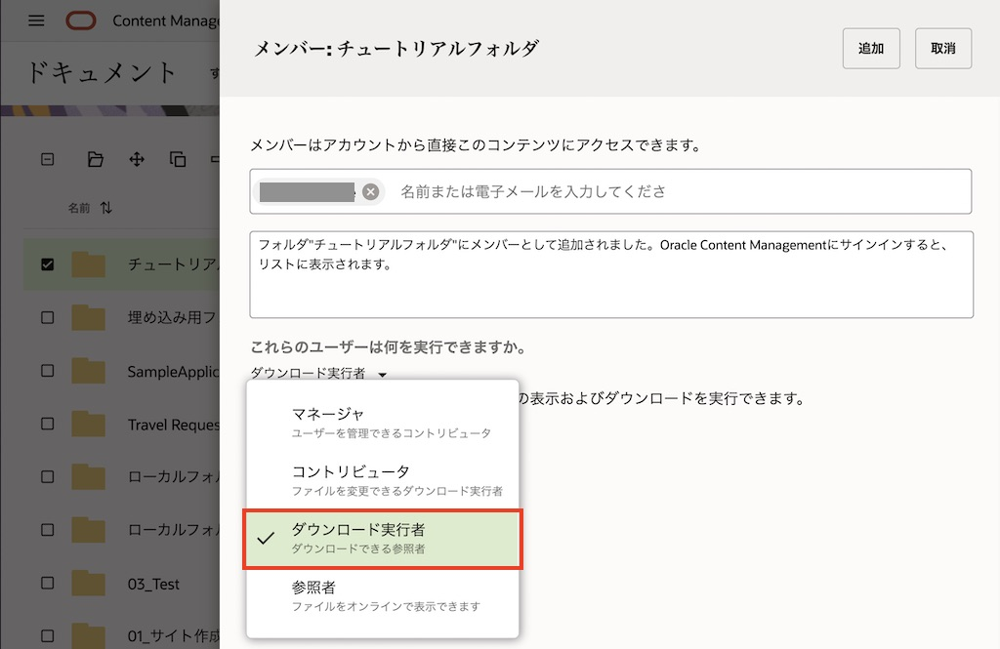
-
追加されたメンバーが表示されます

-
フォルダにメンバーを追加すると、フォルダのアイコンが変更されます
アイコン 説明 
個人フォルダ（フォルダ共有なし） 
共有フォルダ（フォルダ共有あり）
1.2 フォルダにグループを追加する
グループをメンバーとして追加すると、グルームに所属するユーザーすべてにフォルダのアクセス権限が付与されます。
グループには、OCM インスタンスで作成・管理するグループと、Oracle Identity Cloud Service (IDCS) で管理するIDCSグループがあります。グループの作成・管理は、10. グループ（Oracle Content Management のファイル共有機能を利用しよう）をご確認ください
-
メンバーを追加するフォルダを選択し、「メンバー」 をクリックします
-
「メンバーの追加」 を選択します
-
追加するグループを入力し、候補が出てきたらグループ名をクリックします。ここでは OCMローカルグループ1 を選択してます

-
アクセス権限（ここでは「コントリビュータ」）を選択し、「追加」 をクリックします
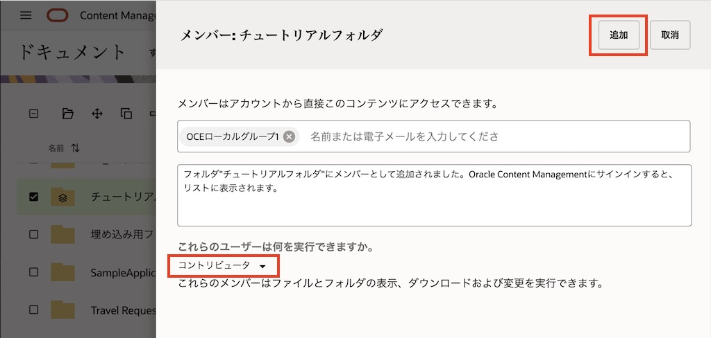
-
追加されたグループが表示されます
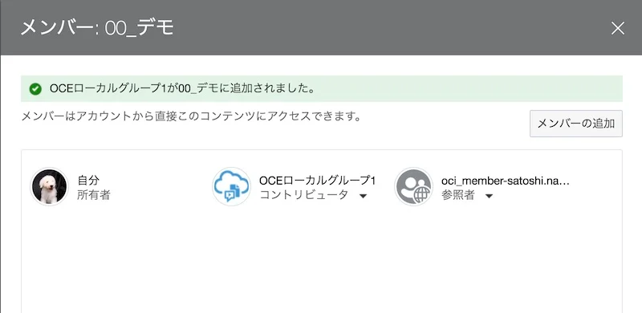
1.3 フォルダに追加されたメンバーのアクセス権限を変更する
-
メンバーのアクセス権限を変更するフォルダを選択し、「メンバー」 をクリックします
-
メンバーに付与されているアクセス権限をクリックし、アクセス権限を変更します。ここでは、OCMローカルグループ1 に付与した コントリビュータ権限 を 参照者 に変更します

[TIPS]
フォルダに追加されているメンバーのアクセス権限を変更する場合は、そのフォルダの マネージャ権限 が必要です。メンバーに付与したフォルダへのアクセス権限を解除する場合は、「削除」 を選択します。 -
「完了」 をクリックします
1.4 フォルダに追加されたメンバーのアクセス権限を取り消す
-
フォルダを選択し、「メンバー」 をクリックします
-
アクセス権限を取り消すメンバーのアクセス権限をクリックし、「削除」 をクリックします。ここでは、OCMローカルグループ1 のアクセス権限を取り消します
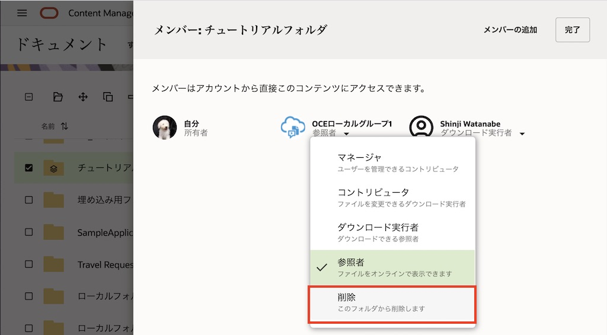
-
確認画面が表示されます。「はい」 をクリックします
2. メンバー・リンクを共有する
2.1 フォルダのメンバー・リンクを共有する
-
フォルダを選択し、「リンクの共有」 をクリックします

-
「このリンク」 より 「メンバーのみ」 を選択します
-
「リンクのコピー」 をクリックします。フォルダへのメンバー・リンクが、クリップボードにコピーされます
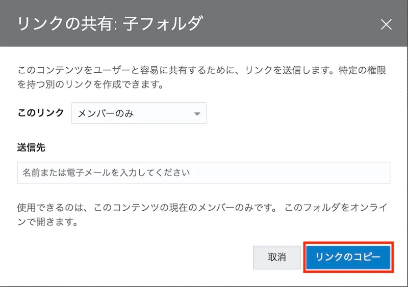
-
OCM から直接電子メールを送信する場合は、「送信先」 にフォルダを共有したメンバーを選択します。必要に応じて、リンク送付先のユーザーへのメッセージを入力します
-
「リンクの送信」 をクリックします。OCM からメンバー・リンクが記述された電子メールが送信されます

2.2 ファイルのメンバー・リンクを共有する
-
ファイルを選択し、「リンクの共有」 をクリックします

-
「このリンク」 より 「メンバーのみ」 を選択します
-
「リンク・オプションの編集」 をクリックします
-
オンライン・アクセスもしくはダイレクト・ダウンロードを選択します（デフォルトはオンライン・アクセス）
-
オンライン・アクセス: ファイルの プレビュー が表示されます
-
ダイレクト・ダウンロード: ファイルの ダウンロード が実行されます
-
-
「リンクのコピー」 をクリックします。メンバー・リンクが、クリップボードにコピーされます

-
OCM から直接電子メールを送信する場合は、「送信先」 にフォルダを共有したメンバーを選択します。必要に応じて、リンク送付先のユーザーへのメッセージを入力します
-
「リンクの送信」 をクリックします。OCM からメンバー・リンクが記述された電子メールが送信されます
3. パブリック・リンクの作成と共有
3.1 フォルダのパブリック・リンク
3.1.1 フォルダのパブリック・リンクを作成する
-
フォルダを選択し、「リンクの共有」 をクリックします
-
「このリンク」 より 「パブリック」 を選択します

-
「リンク・オプションの編集」 をクリックします
-
「送信先」を入力します（任意）
-
送信先へのメッセージを入力します（任意）
-
「既存のリンクの選択」よりリンク名を入力・編集します。リンク名のデフォルトは
Web-YYYY-MM-DDで、リンク名は変更できます -
「リンクの権限」を参照者、ダウンロード実行者、コントリビュータより選択します。ここでは 「コントリビュータ」 を選択します
-
「このリンクにアクセスできるユーザー」を選択します。ここでは 「すべてのユーザー」 を選択します
-
すべてのユーザー （リンクを知っているすべてのユーザーがアクセス可）
-
すべての登録済みユーザー （リンクを知っている該当OCMインスタンスにサイン・インできるユーザーがアクセス可）
-
-
「リンクの有効期限」を設定します（任意）
-
「リンク・アクセス・コード」を設定します（任意）。アクセスコードは、8文字以上 で設定します
-
-
すべての入力が完了したら 「リンクのコピー」 をクリックします。作成されたパブリック・リンクがクリップボードにコピーされます

-
”xxxフォルダへのリンクがクリップボードにコピーされました。” のメッセージの 「リンクの表示」 をクリックします。

-
作成されたパブリック・リンクのURLと詳細を確認できます
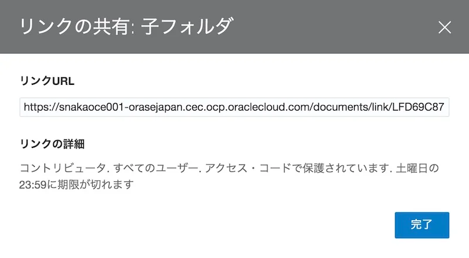
3.1.2 パブリック・リンクからフォルダにアクセスする
-
別ブラウザを起動し、前の手順で作成したパブリック・リンクをコピー＆ペーストしてアクセスします
-
アクセス・コードを入力し、フォルダを開きます

-
フォルダ内のファイルのプレビューやダウンロードができることを確認します
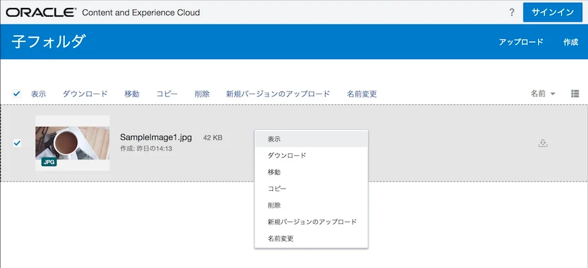
-
フォルダ（ここでは「サブフォルダ２」）の作成ができることを確認します。また、ファイル（ここではSampleImage1.jpg）のアップロードができることを確認します
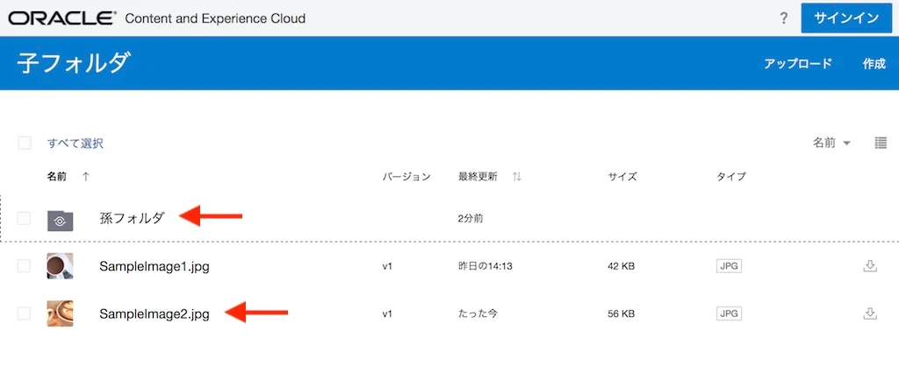
3.2 ファイルのパブリックリンクを作成する
3.2.1 ファイルのパブリック・リンクを作成する
-
ファイルを選択し、「リンクの共有」 をクリックします
-
「このリンク」 より 「パブリック・リンク」 を選択します
-
「リンク・オプションの編集」 をクリックします
-
「送信先」を入力します（任意）
-
送信先へのメッセージを入力します（任意）
-
「既存のリンクの選択」よりリンク名を入力・編集します。ここでは、デフォルトのリンク名（Web-YYYY-MM-DD） とします
-
「リンクの権限」を参照者、ダウンロード実行者、コントリビュータより選択します。ここでは 「ダウンロード実行者」 を選択します
-
「このリンクにアクセスできるユーザー」を選択します。ここでは 「すべてのユーザー」 を選択します
-
「リンクの有効期限」を設定します（任意）
-
「リンク・アクセス・コード」を設定します（任意）
-
-
すべての入力が完了したら 「リンクのコピー」 をクリックします。作成されたパブリック・リンクがクリップボードにコピーされます

-
リンクの表示をクリックすると、作成されたパブリック・リンクのURLと詳細を確認できます
3.2.2 パブリック・リンクからファイルにアクセスする
-
別ブラウザを起動し、前の手順で作成したパブリック・リンクをコピー＆ペーストしてアクセスします
-
アクセス・コードを入力します
-
パブリックリンクで指定されたファイルがプレビュー表示されます
-
「ダウンロード」 をクリックすると、ファイルがダウンロードされます
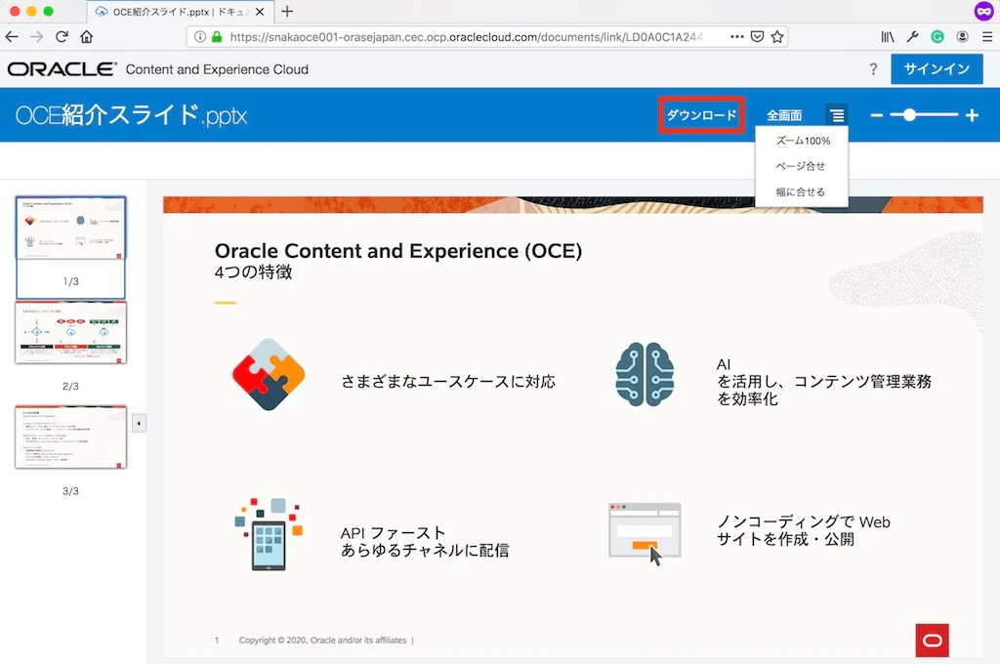
-
この Web ブラウザを閉じます
3.2.3 ファイルのアクセス履歴を確認する
-
ファイルのパブリック・リンクを作成した Web ブラウザに戻ります
-
パブリック・リンクを作成したファイルを選択し、「プロパティ」 をクリックします
-
「アクセス履歴」 タブをクリックします
-
ファイルのアクセス履歴が表示されます。パブリック・リンクからのアクセスの場合、パブリック・リンク作成時に指定したリンク名 が実行者として記録されます
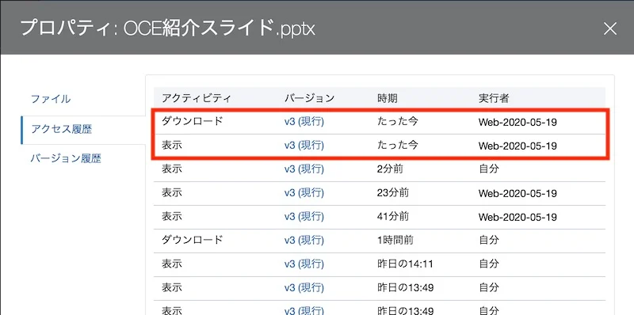
3.3 作成済のパブリックリンクを編集する
3.3.1 作成済のファイルへのパブリック・リンクを編集する
-
3.2.1 でパブリックリンクを作成したファイルを選択し、「リンクの共有」 をクリックします
-
「このリンク」 より 「パブリック・リンク」 を選択します
-
「リンク・オプションの編集」 をクリックします
-
「既存のリンクの選択」 より、前の手順で作成したパブリックリンク名（この場合はWeb-2021-11-16）を選択します

-
「リンクの権限」 を変更します。ここでは「ダウンロード実行者」を 「参照者」 に変更します

-
すべての入力が完了したら 「リンクのコピー」 をクリックします。作成されたパブリック・リンクがクリップボードにコピーされます
-
3.3.2 編集後のパブリック・リンクでファイルにアクセスする
-
別ブラウザを起動し、前の手順で作成したパブリック・リンクをコピー＆ペーストしてアクセスします
-
アクセス・コードを入力します
-
パブリックリンクで指定されたファイルがプレビュー表示されます。「ダウンロード」が表示されない ことを確認します
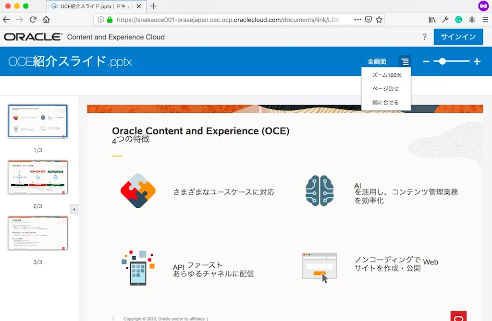
以上でこのチュートリアルは終了です。